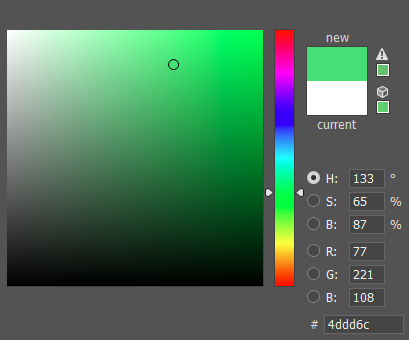

A World of Hues
Color speaks louder than words
Color
Color Spectrum
The color spectrum is made up of all visible colors (Red, Orange, Yellow, Green, Blue, Indigo, Purple). On the electromagnetic spectrum visible light falls between 380nm to 750nm. The color spectrum is created from white light which is the a combination of all colors which is why when you break white light up you get ROYGBIV.

Color
Color is the characteristic of human visual perception described through color categories, with names such as red, yellow, purple, or blue. This perception of color derives from the stimulation of cone cells in the human eye by electromagnetic radiation in the spectrum of light. Color categories and physical specifications of color are associated with objects through the wavelength of the light that is reflected from them. This reflection is governed by the object's physical properties such as light absorption, emission spectra, etc.
So why are somethings blue and other red? Well that is because as all colors hit an object certain rays of light are absorbed causing them to not be visible. The color that reflects is what we see. What about white and black? For use to see white all colors must be reflected and for use to see black all colors must be absorbed.
RGB
You can make almost any color with just Red, Green, and Blue. This is why they are called additive colors.
Elements of Color
There are three elements of color. They are Hue (color), Value (Brightness), and Chroma (Brilliance).
Hue denotes qualities that can be differentiated by color words such as red, yellow, green, blue or purple. These properties we describe as hues are not independent entities in themselves but form part of a color continuum which, like a ring, has no beginning and no end but forms a seamless continuum. Between red and yellow there is an infinite number of colors possessing the elements of both these colors.
Value describes the relative brightness of colors. As well as differentiating colors by their hues, we can express them as brighter or darker. Bright colors are crisp and refreshing, giving a pleasant, cheerful impression. Dark colors are heavy and subdued. This is the dimension of color "weighting."
Chroma differentiates color by their brilliance or strength. The brilliance or dullness of colors can be expressed in quantitative terms on the basis of chroma (C). A brilliant color stands out and strikes us as gorgeous. A dull color creates a quiet, subdued impression, the image we frequently associate with gentler, more refined colors. This is the dimension of color brilliance.
Hexadecimal
Information
When it comes to using CSS to stylize websites it is impractical to have someone give a name to every color that can be used. This is why hexadecimal code was created. With it each color has a name that the computer can read and people don't have to come up with a name for every color you can program with.
A computer screen displays a color by combining red light, green light and blue light. 100% red, 100% green and 100% blue produces white. Zero red, zero green and zero blue produces black. In fact, equal levels of red, green and blue, whatever that level may be, will always produce a shade of gray.
The six digits of a hex code are in fact three two-digit numbers, each representing the level of red, green and blue. So #000100 is zero red, the darkest possible shade of green without being totally black, and zero blue. #010101, because the three values are all equal, is the darkest possible shade of grey, and #020202 is the second darkest. And of course #000000 is black. But what about #FFFFFF for white – what do the letters mean?
There are 256 possible shades each of red, green and blue (0 through 255). If we wanted to produce white (the brightest levels of all three colors combined), we’d need to write #255255255. That’s nine digits long.
Hex codes use the hexadecimal number system to make it possible for 256 numbers to be represented with only two digits. Instead of counting 0 through 10 like our regular decimal number system, it counts 0, 1, 2, 3, 4, 5, 6, 7, 8, 9, A, B, C, D, E, F and then 10, followed by 11, 12, 13, 14, 15, 16, 17, 18, 19, 1A, 1B, 1C, 1D, 1E, 1F and then 20. Make sense?
This means that 256 numbers can be represented using only two digits, instead of the 100 that are possible with our decimal number system (0 through 99). So the highest possible two digit number is not 99 but FF (equal to 255). This is why white is #FFFFFF, pure red is #FF0000, pure green #00FF00 and pure blue #0000FF.
Credits
Developers
 |
 |
|---|---|
Mason Porter |
Jaeden Savoie |
Creative Lead |
Communications Lead |
Site Developer |
Research and Media |